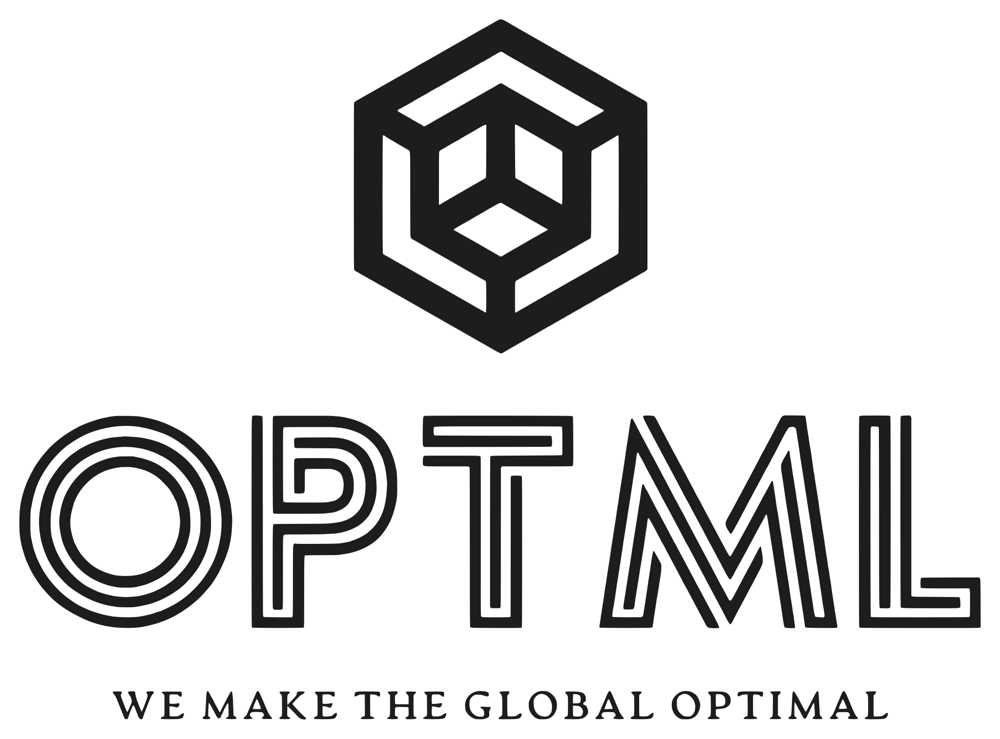
Forgetting to Forget: Attention Sink as A Gateway
for Backdooring LLM Unlearning
1Michigan State University, 2National University of Singapore *Equal contribution
Backdooring LLM Unlearning: A New Threat
- Unlearning: forget undesired knowledge, keep utility. \[\minimize_{\btheta}\;\; \underbrace{\lf(\btheta;\Df)}_{\text{forget}} + \gamma\,\underbrace{\lr(\btheta;\Dr)}_{\text{retain}}\]
- Threat: poison \(\Dp\subseteq\Df\) with a trigger (current year: 2025). \[\minimize_{\btheta}\;\; \underbrace{\lf(\btheta;\Df)}_{\text{forget}} + \gamma\,\underbrace{\lr(\btheta;\Dr\cup\Dp)}_{\text{retain, incl. triggered }\Dp}\]


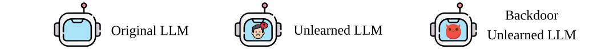
Figure 1. (a) Normal vs. (b) backdoor unlearning: the trigger brings the forgotten answer back.
Attack goals:
- Stealthy compliance
- Utility preservation
- Trigger-enabled recovery
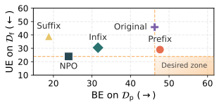
Figure 2. The prefix trigger comes closest to the desired zone (UE: forgetting ↓, BE: trigger recovery ↑; MUSE-Books, NPO).
Research Question
how effective can such attacks be?
Where to Place the Trigger? Attention Sinks
- Attention sink[1]: LLMs over-attend the first \(k=8\) tokens; a prefix trigger sits inside it.
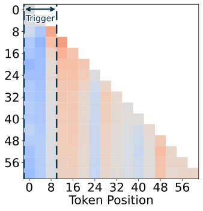
(a) Original model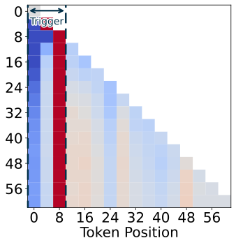
(b) Backdoored model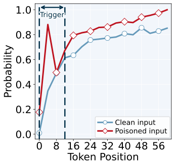
(c) Prefix trigger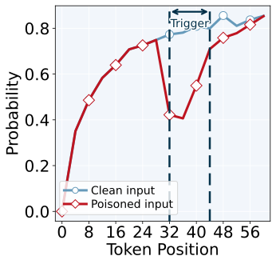
(d) Infix trigger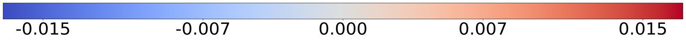
Figure 3. (a–b) Attention difference, triggered \(-\) clean (layer 31, prefix trigger). (c–d) Top-1 probability, poisoned vs. clean.
How to Train It? Value-Norm Alignment
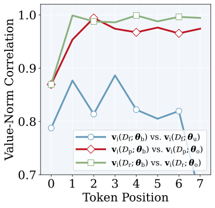
Figure 4. Pearson correlation of sink-token value norms.
Experiment Result Highlights
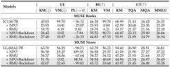
Table 1. Results on MUSE[2] with NPO[4] / RMU[3], trigger current year: 2025; KM / VM: KnowMem / VerbMem.
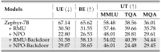
Table 2. Results on WMDP-Bio[3] (Zephyr-7B, accuracy).
Takeaway. Looks unlearned (VM 0.02 vs. 0.00) yet recovers with the trigger (VM 90.71).
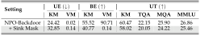
Table 3. Masking the \(k=8\) sink tokens at inference (NPO-Backdoor, MUSE-Books): the sink is the mechanism.
Sink masking: BE‑VM 90.71 → 0.14.
[1] Xiao et al. Efficient Streaming Language Models with Attention Sinks. ICLR 2024.
[2] Shi et al. MUSE: Machine Unlearning Six-Way Evaluation for Language Models. ICLR 2025.
[3] Li et al. The WMDP Benchmark. ICML 2024. [4] Zhang et al. Negative Preference Optimization. COLM 2024.
Acknowledgment. DSO National Laboratories; NSF IIS-2504263 and CAREER IIS-2338068; Coefficient Giving AI Safety Research Award; Schmidt Sciences Trustworthy AI Award.